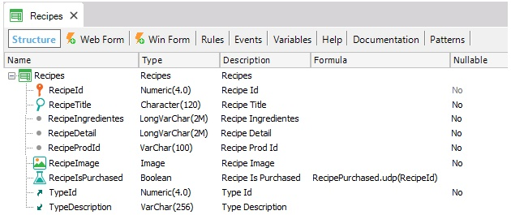
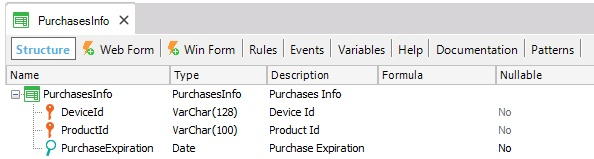
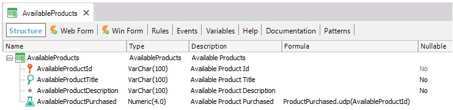
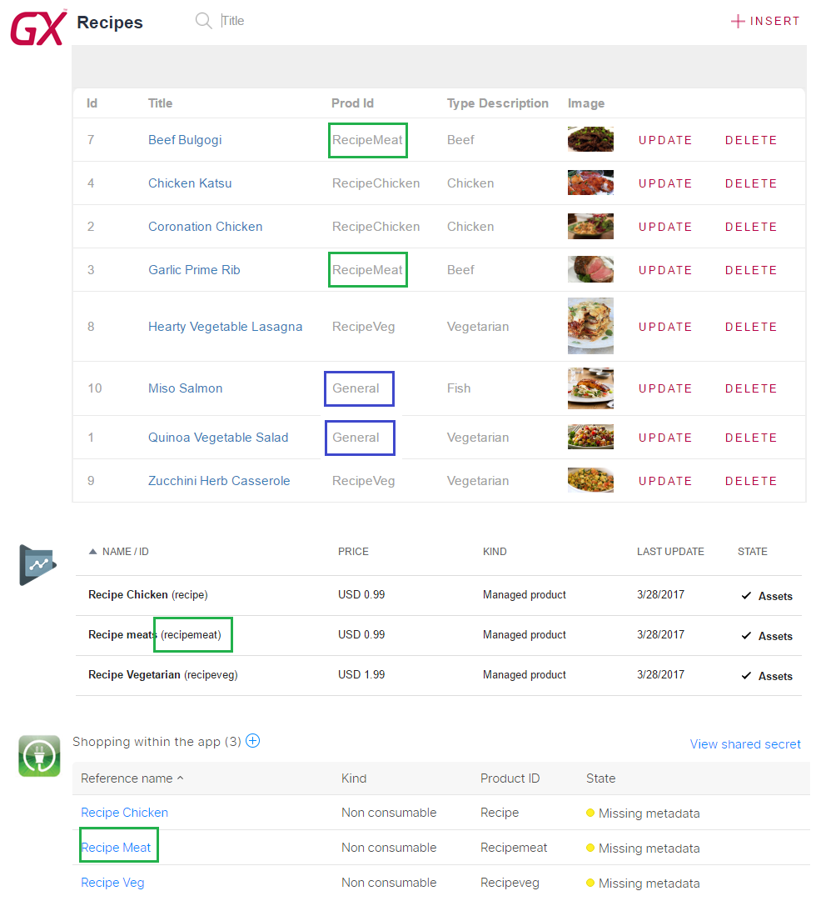
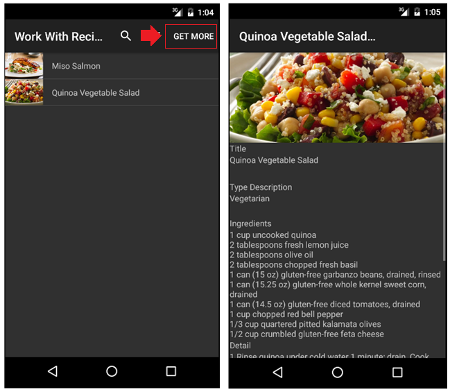
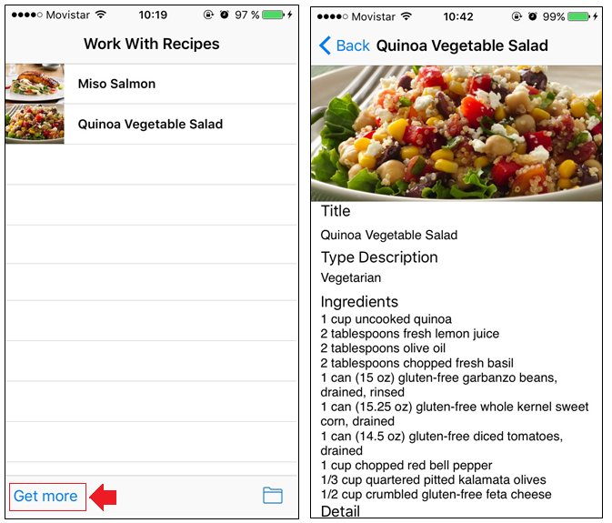
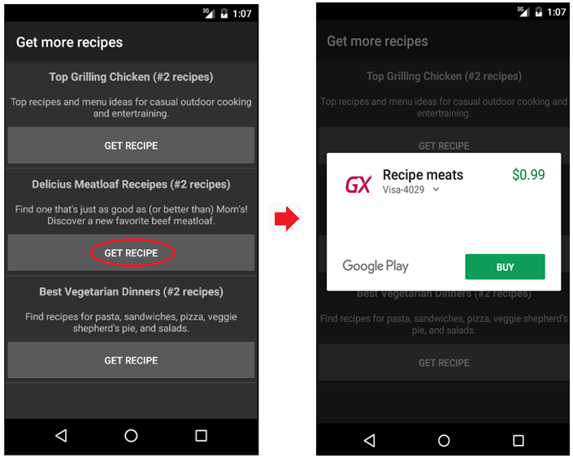
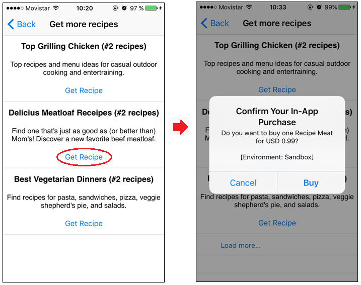
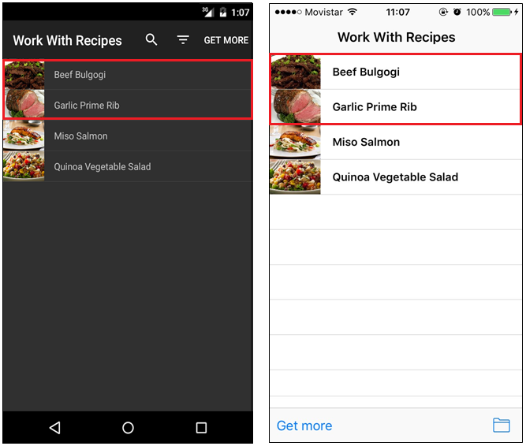

Here is an example of how to use In-App Purchase in a GeneXus-generated Smart Device application using the StoreAPI external object (X Evolution 3).
It is a simple case of what we call "One-time-service" product, which means that a product is purchased only once and then it becomes available to the user in every device. It is also known as "Non-consumable" product in iOS Store Kit Framework and "In-App unmanaged" product in Android In-App Billing Service.
We have an application which provides different types of Food Recipes. There are some public recipes available to all users for free and we will include the possibility to buy new groups of recipes. After being purchased, the recipes in these groups will always be available to the user. In addition, new recipe groups available for purchase can be added, modified or deleted anytime.
One important thing to have in mind is that we need to store information about the purchases and products in our application; in this case:
- Each recipe will have an associated Product Identifier to know which store product has to be purchased in order to have the recipe available. We will also use a "General" value to indicate public recipes.
- After a purchase is completed, we will store the relation "User Id - Product Purchased". This information is checked before loading the list of recipes, to include all the purchased ones.
- We will also maintain a database table with information about available products. This table will be used to list the products available for purchase (listing those that haven't purchased yet) and mainly is included to be able to add new recipe groups for purchase anytime.
- Before you start developing in GeneXus, configure the application In-App Purchases on the platform store.
- First of all, define all the required transactions, Recipes, PurchasesInfo and AvailableProducts.

Note: The RecipePurchased procedure checks if the recipe is public ("General") or if the user has purchased the associated product.

Note: The PurchaseExpiration attribute do not anything in this basic sample, but it can be used to simulate a subscription scenario managed by the developer.

Note: The ProductPurchased procedure checks if the product has been previously purchased by the user.
- Then, our database must have a Product Identifier associated which each recipe. We will use the value "General" to indicate the public recipes, which will be available the first time we enter the application. The Product Identifier is a string value with one of the Product-IDs defined for the application In-App Purchases in the platform store.

- In addition, we need to fill the Available Products table with the products available for purchase. These values can be later modified, to offer new recipe groups for purchase. Remember that the associated Product Identifier has to be previously configured in the platform store (as was described in the previous point).
- Then we need to set a filter for the Recipes list in the WorkWithDevicesRecipes pattern instance. We just include the condition RecipeIsPurchased = True. In the first execution, when no purchases have been performed, only the public ("General") recipes will be displayed. Also, we can see the detail of our purchased Recipes.
- Then we select the "Get More" action and we will see a panel where all the non-purchased available products are displayed. Each one has a "Get Recipes" action to perform the purchase. Let's buy the Meat Recipes group !!


- After the purchase is successfully completed, we need to store the User-Product information in the PurchasesInfo table to make the recipes group available to the user in the future. Finally, from now on, when we list the recipes, we will also see the new recipes purchased. In the products available for purchase, the already purchased group is no longer displayed.

Download this sample
- In the previous sample, the interaction with the platform In-App Purchase store was minimized. Managing complete information in your application gives more flexibility, allowing you to check purchases by GAM Users, Device Id or any other entity.
- Since we are managing all the information about users, products, and purchases in the application database, we are able to simulate a subscription scenario. We can add a PurchaseExpiration date attribute in the PurchasesInfo table, and when checking if a user has purchased a product we just check that the PurchaseExpiration date is still valid.
In-App Purchase Sample - Classified Ads
|